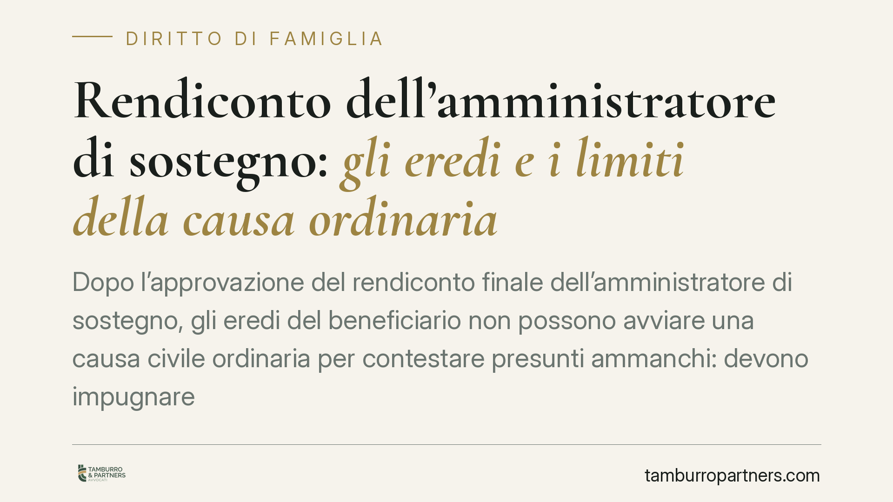

Rendiconto dell'amministratore di sostegno: gli eredi e i limiti della causa ordinaria
Dopo l'approvazione del rendiconto finale dell'amministratore di sostegno, gli eredi del beneficiario non possono avviare una causa civile ordinaria per contestare presunti ammanchi: devono impugnare il decreto del giudice tutelare. Lo afferma un orientamento del Tribunale di Rovigo, che sanziona anche la citazione di precedenti giurisprudenziali inesistenti. Vediamo perché la scelta della strada processuale corretta è decisiva.

Il rendiconto dell'amministratore di sostegno e la questione decisa
La pronuncia del Tribunale di Rovigo, Sezione I, affronta un tema ricorrente: il controllo sul rendiconto dell'amministratore di sostegno dopo la cessazione dell'incarico e il decesso del beneficiario.
Il caso tipo è questo. L'amministratore di sostegno presenta il conto finale della propria gestione, il giudice tutelare lo approva, poi gli eredi del beneficiario lamentano ammanchi e promuovono una ordinaria causa civile di responsabilità per ottenere il rimborso. Secondo il Tribunale, questa strada è preclusa: gli eredi avrebbero dovuto impugnare il decreto di approvazione, non aggredire l'amministratore con un giudizio autonomo.
> Nota di cautela. La pronuncia qui commentata è nota alla data dell'8 maggio 2026, ma i suoi estremi (numero e data di deposito) non risultano, allo stato, verificabili in forma ufficiale. La trattiamo quindi come spunto da un orientamento di merito. Prima di qualsiasi utilizzo in atti giudiziari, gli estremi vanno reperiti e controllati sulla fonte primaria.
Inquadramento normativo
Il rendiconto nell'amministrazione di sostegno si regge sul rinvio operato dall'art. 411 c.c. alle norme sulla tutela, in quanto compatibili. In materia di tutela il conto finale della gestione è disciplinato dall'art. 385 c.c., mentre l'approvazione del conto da parte del giudice è regolata dall'art. 386 c.c. Sono due funzioni distinte: la presentazione del conto e il provvedimento che lo approva o lo respinge.
Sul piano processuale, l'art. 720-bis c.p.c. detta le regole per i procedimenti in materia di amministrazione di sostegno e richiama, in quanto compatibili, le disposizioni sull'interdizione. Avverso i decreti del giudice tutelare opera di regola il reclamo camerale ex art. 739 c.p.c., mentre l'art. 720-bis, secondo e terzo comma, prevede il reclamo alla corte d'appello contro il decreto che decide sulla misura e il ricorso per cassazione contro il decreto della corte d'appello. Il punto pratico è che il controllo sul rendiconto passa per l'impugnazione del provvedimento del giudice tutelare, non per un'autonoma azione di cognizione piena.
Completano il quadro l'art. 45 disp. att. c.c., sul deposito e sulla verifica del conto, e gli artt. 50-bis e 339 c.p.c., richiamati sotto il profilo della competenza e del regime impugnatorio.
La distinzione che conta: impugnazione del decreto o azione di responsabilità
Il cuore della decisione è la separazione tra due rimedi.
Il primo è l'impugnazione del decreto di approvazione del conto: è lo strumento per contestare la correttezza della gestione mentre quel provvedimento è ancora aggredibile. Lasciato scadere il termine, il decreto fa stato sui rapporti già rendicontati.
Il secondo è l'azione di responsabilità di cognizione ordinaria: residua per i profili non coperti dal rendiconto approvato, ad esempio per condotte dolose o fraudolente emerse successivamente. Non può però diventare un modo per rimettere in discussione, anni dopo, un conto che il giudice tutelare ha già vagliato e approvato.
Chi ha omesso l'impugnazione nei termini non recupera la contestazione travestendola da causa civile ordinaria. La distinzione non è formalistica: protegge la stabilità dei provvedimenti del giudice tutelare e tutela l'amministratore che ha operato sotto controllo giudiziale.
Il monito sui precedenti inventati e l'art. 96 c.p.c.
Un passaggio della pronuncia merita attenzione autonoma. Il Tribunale sanziona ex art. 96 c.p.c. la parte che ha citato precedenti giurisprudenziali inesistenti, verosimilmente generati da strumenti di intelligenza artificiale e inseriti in atto senza verifica.
Il messaggio è netto: allegare sentenze inventate espone a responsabilità per responsabilità aggravata. L'uso dell'IA nella redazione di atti non solleva il difensore dall'obbligo di controllare ogni citazione sulle fonti ufficiali. È un richiamo deontologico e tecnico che vale ben oltre il caso deciso.
Implicazioni pratiche per gli eredi
Per gli eredi del beneficiario cambia la tempistica dell'azione. Il momento decisivo è l'approvazione del rendiconto finale: da quel passaggio decorrono i termini per reagire. Attendere, confidando in una successiva causa di rimborso, rischia di tradursi in una inammissibilità.
Per l'amministratore di sostegno, la pronuncia conferma che una gestione documentata e un conto finale approvato offrono una protezione concreta rispetto a contestazioni tardive.
Cosa fare in concreto
- Vigilate sulle scadenze: dall'approvazione del rendiconto decorrono i termini di impugnazione; non rinviate la reazione a un'ipotetica causa successiva.
- Leggete il decreto del giudice tutelare: individuate con precisione il rimedio applicabile (reclamo ex art. 739 c.p.c. o impugnazioni ex art. 720-bis c.p.c.).
- Distinguete i profili: separate le contestazioni sul conto già approvato da eventuali condotte fraudolente non rendicontate, che possono fondare un'autonoma azione.
- Verificate ogni precedente citato: controllate numero, data e autorità di ogni sentenza richiamata in atto, soprattutto se prodotta con strumenti di IA.
- Acquisite subito la documentazione contabile: estratti, giustificativi e relazioni periodiche sono determinanti per valutare la fondatezza della contestazione.
Contributo informativo a cura di Tamburro & Partners Avvocati - Avv. Giuseppe Tamburro. Non costituisce parere legale.
Ogni famiglia ha il suo equilibrio.
Separazione, divorzio, affidamento, assegno: se vuoi un confronto riservato su una specifica situazione, scrivi allo studio. Ti rispondiamo entro un giorno lavorativo.